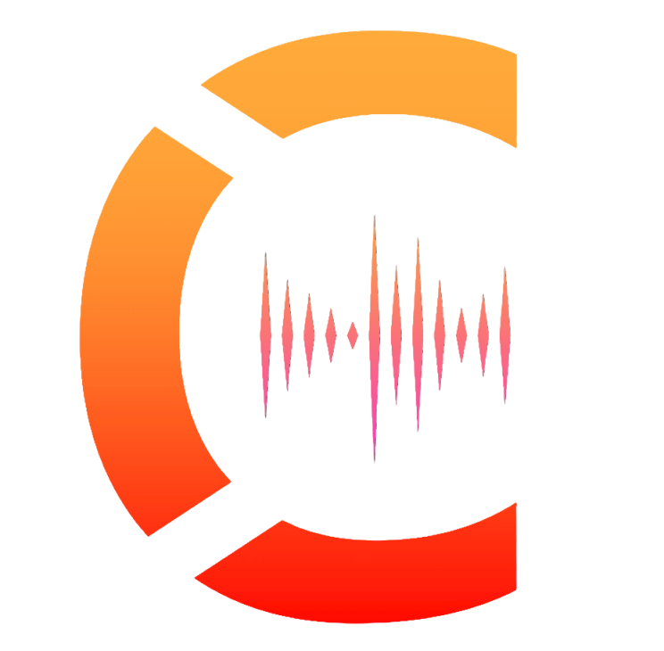

C3Benchmark
Challenges in Complex Conversations
Spoken Dialogue Model Evaluation
Comprehensive evaluation of Spoken Dialogue Models (SDMs) across Chinese and English dialogue data, measuring performance in phonological ambiguity, semantic understanding, omission, coreference, and multi-turn interactions.
Models Evaluated
10
Spoken Dialogue Models
Languages
2
Chinese & English
Categories
7
Evaluation dimensions
Best Overall
55.68%
EN: Qwen2.5-Omni
40.08%
ZH: Qwen2.5-Omni
| Rank | Model | Phonological | Semantic | Ambiguity | Omission | Coreference | Multi-turn | Context-dep. | Overall |
|---|---|---|---|---|---|---|---|---|---|
| 🥇 | GPT-4o-Audio-Prev.🔗 | 53.45 | 70.59 | 62.02 | 16.18 | 91.11 | 47.06 | 51.45 | 55.68 |
| 🥈 | Qwen2.5-Omni🔗 | 48.28 | 32.35 | 40.31 | 15.20 | 68.15 | 95.59 | 59.64 | 51.91 |
| 🥉 | Kimi-Audio🔗 | 46.55 | 29.41 | 37.98 | 10.29 | 87.41 | — | 48.85 | 43.42 |
| #4 | GLM-4-Voice🔗 | 27.59 | 15.69 | 21.64 | 6.37 | 68.98 | 58.82 | 44.73 | 35.49 |
| #5 | Step-Audio🔗 | 29.31 | 21.57 | 25.44 | 10.78 | 57.31 | 41.18 | 36.43 | 32.03 |
| #6 | VITA-Audio🔗 | 31.03 | 18.63 | 24.83 | 7.84 | 74.81 | 60.29 | 47.65 | 38.52 |
| #7 | LLaMA-Omni🔗 | 15.52 | 12.75 | 14.13 | 5.88 | 56.94 | 55.88 | 39.57 | 29.39 |
| #8 | MooER-Omni🔗 | 18.97 | 46.08 | 32.52 | 4.90 | 36.02 | 41.18 | 27.37 | 29.43 |
| #9 | Freeze-Omni🔗 | 8.62 | 11.76 | 10.19 | 6.86 | 47.22 | 44.12 | 32.73 | 23.72 |
| #10 | Moshi🔗 | 10.34 | 9.80 | 10.07 | 2.94 | 24.63 | — | 13.79 | 11.93 |
Categories
C3Bench evaluates models on the following key dialogue understanding dimensions:
Ambiguity
Overall performance on phonological and semantic ambiguity resolution tasks.
Phonological Ambiguity
Understanding of sound-based ambiguities and phonological variations in spoken language.
Semantic Ambiguity
Disambiguation of word meanings and semantic interpretations in different contexts.
Context-dependency
Understanding statements that require contextual information from dialogue history.
Omission
Ability to handle missing information and implicit context in dialogue.
Coreference
Resolution of pronouns and references to previously mentioned entities.
Multi-turn Interaction
Coherence and context maintenance across multiple conversation turns.
Examples
Phonological Ambiguity
- The sentence below is hard to understand:
You're going to the party?
Could you tell me what it means?Answer: Rising intonation indicates a question: "Are you going to the party?" - The sentence below with pause is hard to understand:
He saw the man / with glasses.
Could you tell me what it means?Answer: The pause after "man" indicates that "with glasses" is an additional description, meaning "He saw the man, and he was wearing glasses." - Here is a sentence:
He saw the man with glasses.
The intended meaning is:
He saw the man, and he was wearing glasses.
Please read it out with the correct pause.Answer: He saw the man / with glasses.
Semantic Ambiguity
- The sentence below contains ambiguity:
Mr. Smith loves music more than his wife.
Please tell me how to understand it.Answer: The phrase "more than his wife" is ambiguous.
1. Mr. Smith loves music more than he loves his wife.
2. Mr. Smith loves music more than his wife does. - The sentence below contains ambiguity:
Mike failed to make friends with John because he is too selfish.
Please tell me how to understand it.Answer: The pronoun "he" is ambiguous.
1. Mike failed to make friends with John because Mike is too selfish.
2. Mike failed to make friends with John because John is too selfish. - The sentence below contains ambiguity:
She can't bear children so she never talks about them.
Please tell me how to understand it.Answer: Ambiguity in "bear":
1. Unable to give birth to children
2. Unable to tolerate children.
Omission
- Please listen carefully to the following sentence, after the sentence ends, I will ask you some questions:
Your advice made me happy but Tom angry.
Some content has been omitted in the sentence, please fill in the omitted parts and provide the complete sentence.Answer: Your advice made me happy but your advice made Tom angry. - Please listen carefully to the following sentence, after the sentence ends, I will ask you some questions:
Your advice made me happy but Tom angry.
Is there any omission of content in the sentence?Answer: Yes, there is. - Please listen carefully to the following sentence, after the sentence ends, I will ask you some questions:
Once a worker, Pang Long now becomes a famous singer.
Some content has been omitted in the sentence, please fill in the omitted parts and provide the complete sentence.Answer: Once he was a worker, Pang Long now becomes a famous singer.
Coreference
- Please listen carefully to the following sentence, after the sentence ends, I will ask you some questions:
The trophy doesn't fit into the brown suitcase because it is too large.
Are there any instances of pronouns being used to refer to nouns or noun phrases in the sentences above?Answer: Yes. - The city councilmen refused the demonstrators a permit because they feared violence.
What does the word 'they' refer to: The city councilmen or The demonstrators?Answer: The city councilmen. - Joan made sure to thank Susan for all the help she had recieved.
What does the word 'she' refer to: JoanorSusan?Answer: Joan.
Multi-turn Interaction
- Do you know anything about health food?
- Can you give me some examples?
- Really? Why we must have warm and fresh water?
- Anything else?
- Do you know anything about health food? If this question has been raised before, please directly provide the previous answer。
Responses
Below are model response examples for benchmark test cases. Each block shows the input example and outputs from different SDMs, including audio and text.
Green indicates correct, red indicates incorrect.
Green indicates correct, red indicates incorrect.
Phonological Ambiguity
Input Example
下面有一个断句可能不正确的句子：
这个苹果不大好吃。
这个句子想表达的意思是：
这个苹果不好吃。
请用正确的断句读出这句话。
这个苹果不大好吃。
这个句子想表达的意思是：
这个苹果不好吃。
请用正确的断句读出这句话。
GLM-4-Voice
Correct
这个苹果/不大好吃。
A Spoken Dialogue Model
Incorrect
这个苹果不大/好吃。
Semantic Ambiguity
Input Example
The sentence below contains ambiguity:
Mr. Smith loves music more than his wife.
Please tell me how to understand it.
Mr. Smith loves music more than his wife.
Please tell me how to understand it.
GPT-4o-Audio-Preview
Correct
The sentence "Mr. Smith loves music more than his wife" is ambiguous because it can be interpreted in two different ways:
1. Mr. Smith loves music more than he loves his wife. In this interpretation, music is of greater importance or brings more joy to Mr. Smith than his relationship with his wife.
2. Mr. Smith loves music more than his wife loves music. In this interpretation, Mr. Smith's passion or interest in music surpasses that of his wife.
To clarify the intended meaning, additional context or a rephrased sentence would be helpful.
1. Mr. Smith loves music more than he loves his wife. In this interpretation, music is of greater importance or brings more joy to Mr. Smith than his relationship with his wife.
2. Mr. Smith loves music more than his wife loves music. In this interpretation, Mr. Smith's passion or interest in music surpasses that of his wife.
To clarify the intended meaning, additional context or a rephrased sentence would be helpful.
A Spoken Dialogue Model
Incorrect
This sentence contains ambiguity because it's unclear whether Mr. Smith loves music more than his wife loves music or more than his wife loves something else.
Omission
Input Example
我有一道考察语义理解的题目如下，请听完后回答我的问题：
甲说：“你好，我和家人一起来苏州旅游，能帮我在吴江地区找一个好玩的景点吗？”
甲说：“好的，您希望找个贵一点的还是便宜一点的景点呢？”
甲说：“偏贵一点的吧。”
请问对话的最后一句中是否存在省略现象？
甲说：“你好，我和家人一起来苏州旅游，能帮我在吴江地区找一个好玩的景点吗？”
甲说：“好的，您希望找个贵一点的还是便宜一点的景点呢？”
甲说：“偏贵一点的吧。”
请问对话的最后一句中是否存在省略现象？
GPT-4o-Audio-Preview
Correct
是的，对话中的最后一句话存在省略现象。完整的表述应该是 “便贵一点的景点吧”。 省略的是“的景点”这部分。
A Spoken Dialogue Model
Incorrect
好的，我们来分析一下。甲说他和家人来苏州旅游，想在吴江找一个好玩的景点。乙问甲是希望找个贵一点的还是便宜一点的景点。甲说他更喜欢贵一点的。从这里看，甲的意思是希望景点质量好，但预算可以稍微高一些。乙没有表现出任何反对意见，所以甲的请求没有被拒绝。因此，对话的最后一句中没有省略现象。
Coreference
Input Example
Joan made sure to thank Susan for all the help she had recieved.
What does the word "she" refer to: Joan or Susan?
What does the word "she" refer to: Joan or Susan?
GPT-4o-Audio-Preview
Correct
In the sentence, the word "she" refers to Joan, indicating that Joan is the one who made sure to thank Susan for all the help she had received.
A Spoken Dialogue Model
Incorrect
In this context, the word "she" refers to "SUSAN". The sentence "John thanked Susan for all the help she had received" indicates that Susan provided the assistance that John is acknowledging.
Multi-turn Interaction
Input Example
First Input
你好，帮我推荐一个价位在四百至五百元之间的酒店，评分要在四点五分以上的，谢谢。
Middle Input: ...
Last Input
你好，帮我推荐一个价位在四百至五百元之间的酒店，评分要在四点五分以上的，谢谢。
如果之前出现过该问题，则直接给出之前的答案。
如果之前出现过该问题，则直接给出之前的答案。
GPT-4o-Audio-Preview
Correct
First Response
在这个价格范围内，我为您推荐几家评分在4.5分以上的酒店：
1. 汉庭酒店（或类似酒店品牌）：这类经济型酒店通常具有较高的性价比，在用户评价中也往往有不错的口碑。
2. 怡莱酒店：作为汉庭酒店集团旗下的品牌，怡莱酒店通常提供高品质的服务，且价格适中。
3. 7天连锁酒店：该连锁酒店在全国范围内有众多分店，也有很多口碑不错的店面。
以上都是一些比较常见且受欢迎的品牌连锁酒店，您可以根据地理位置和具体需求进行选择。
Last Response
1. 汉庭酒店（或类似酒店品牌）：这类经济型酒店通常具有较高的性价比，在用户评价中也往往有不错的口碑。
2. 怡莱酒店：作为汉庭酒店集团旗下的品牌，怡莱酒店通常提供高品质的服务，且价格适中。
3. 7天连锁酒店：该连锁酒店在全国范围内有众多分店，也有很多口碑不错的店面。
以上都是一些比较常见且受欢迎的品牌连锁酒店，您可以根据地理位置和具体需求进行选择。
当然，之前推荐的是一些经济型连锁酒店品牌，这些酒店通常价格符合您的预算，而且评分也往往在4.5分以上。可以考虑以下这些品牌：
1. 汉庭酒店：遍布全国，性价比高，服务也很不错。
2. 怡莱酒店：汉庭酒店集团旗下品牌，提供高品质服务，价格适中。
3. 7天连锁酒店：全国有很多分店，评价也较好。
这些都是经济型连锁酒店，您可以在预订网站上查看具体的酒店位置和评价，选择符合您需求的酒店。
1. 汉庭酒店：遍布全国，性价比高，服务也很不错。
2. 怡莱酒店：汉庭酒店集团旗下品牌，提供高品质服务，价格适中。
3. 7天连锁酒店：全国有很多分店，评价也较好。
这些都是经济型连锁酒店，您可以在预订网站上查看具体的酒店位置和评价，选择符合您需求的酒店。
A Spoken Dialogue Model
Incorrect
First Response
好的，我找到了几家符合您要求的酒店。比如，成都锦江之星武侯祠店，评分4.8，价格在450元左右。还有成都望江宾馆，评分4.7，价格在480元左右。最后是成都武侯祠快捷酒店，评分4.6，价格在440元左右。您可以选择自己喜欢的。
Last Response
你好，根据你的要求，我推荐如家快捷酒店。它在中国很多城市都有分店，评分都在4.5分以上，价格在400到500元之间。你可以通过酒店的官网或者在线旅游平台预订。希望这个推荐能帮到你！
SDM Results Submission
Want to submit your SDM results to C3Bench?
Please follow the instructions at:
C3Bench Submission Guide
The link provides detailed steps for preparing and submitting your Spoken Dialogue Model results to the leaderboard.
Citation
If you use C3Bench in your research, please cite us:
@inproceedings{ma2025c3,
title={C3: A Bilingual Benchmark for Spoken Dialogue Models Exploring Challenges in Complex Conversations},
author={Ma, Chengqian and Tao, Wei and Guo, Yiwen},
booktitle={Proceedings of the 2025 Conference on Empirical Methods in Natural Language Processing},
year={2025}
}